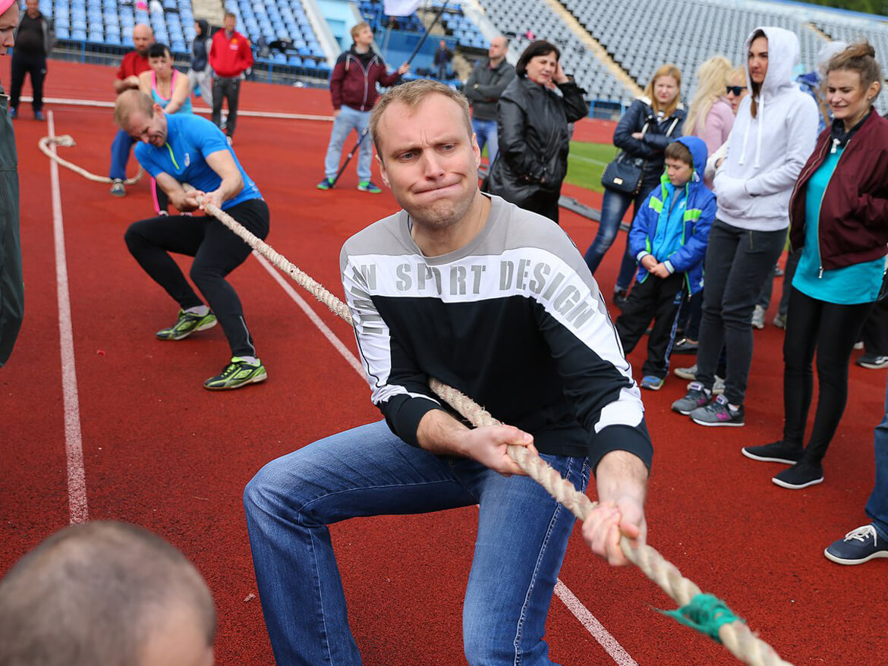
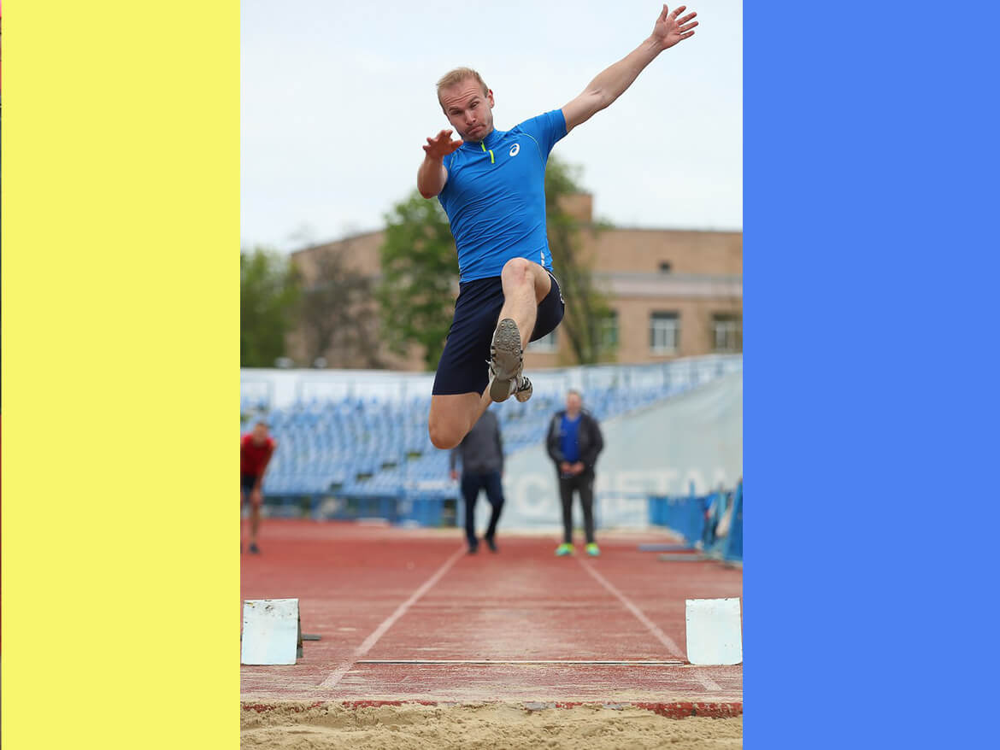
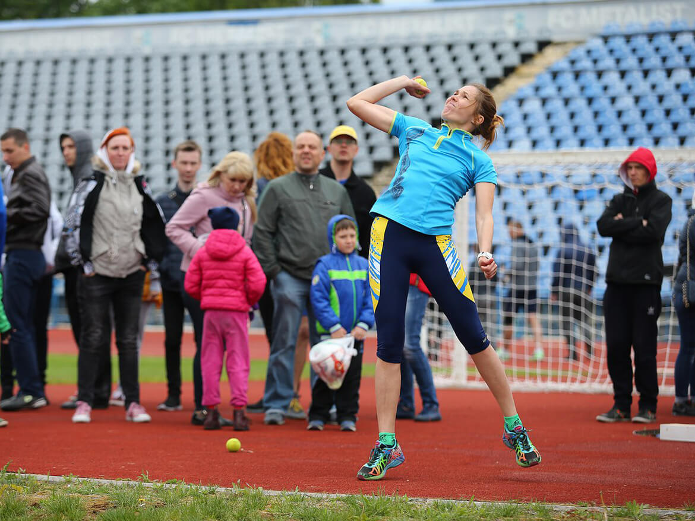
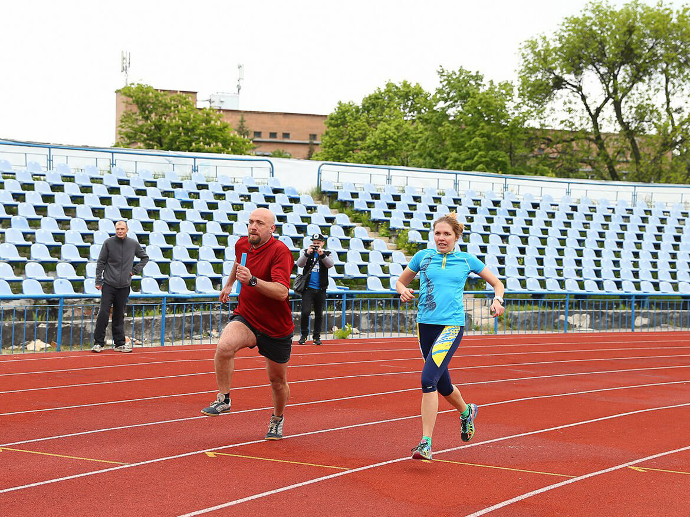
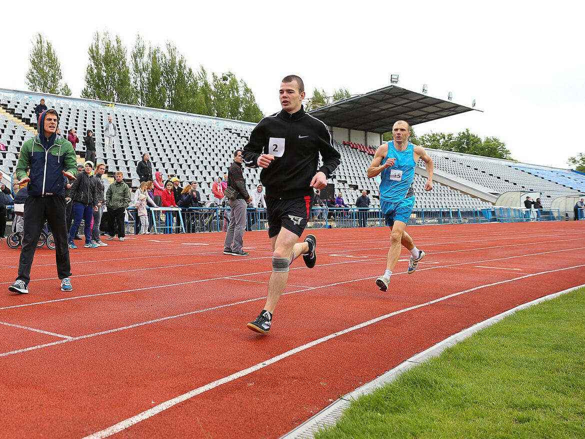
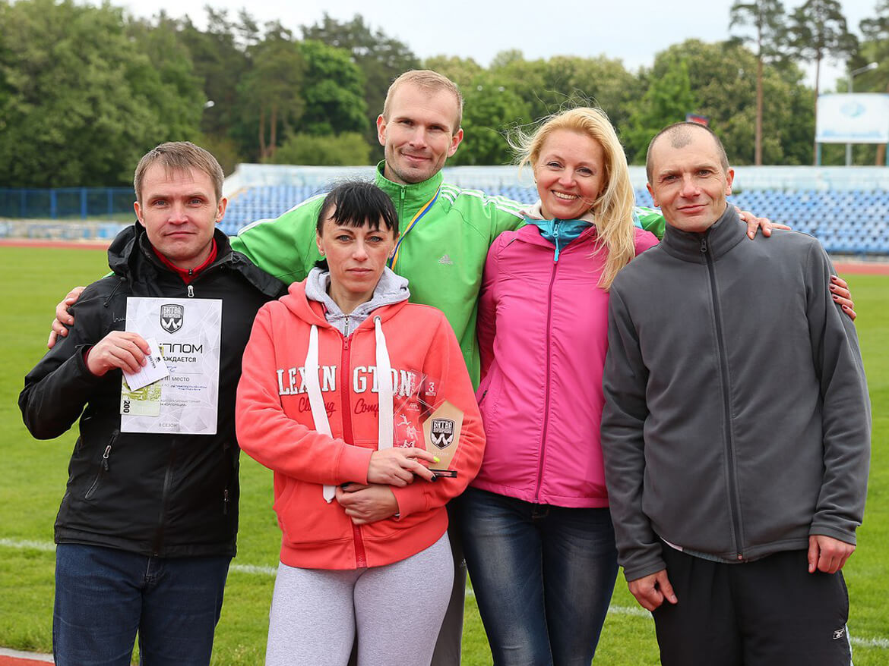
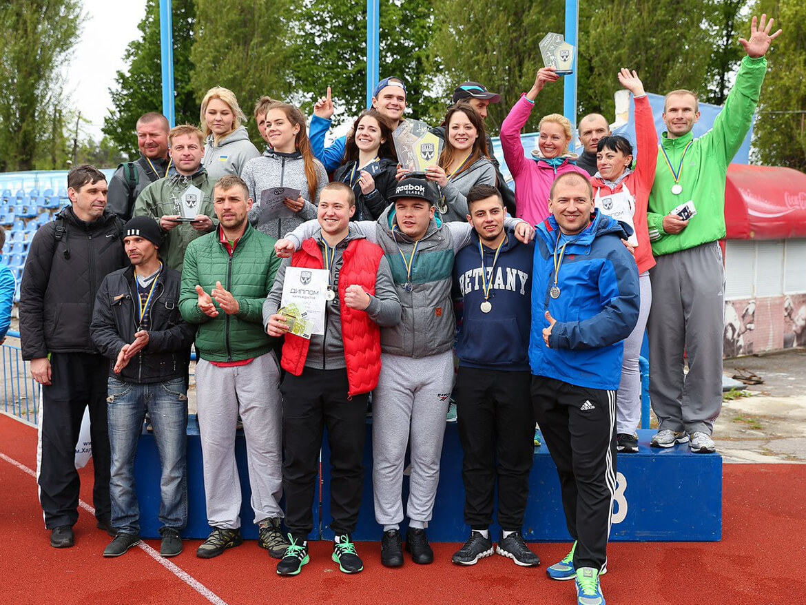

Легкоатлетическое многоборье - "Битва корпораций" II сезон
В этот воскресный день 14 мая мы не ждали от погоды ничего хорошего и все надеялись, что, хотя бы, не будет дождя. Как и в прошлом году, для проведения этапа «легкая атлетика» организаторами турнира был избран стадион «Динамо». Ваш покорный слуга присутствовал на всех баталиях и лично принимал в них участие. Погода в этом году практически всю весну была холодная и не атлетическая. Только в начале мая на чемпионате харьковской области все выступали под тёплым солнцем. В прошлом году этап по лёгкой атлетике переносили из-за непогоды с 4 апреля на 11 апреля. В этом году обошлось без переноса.
В заявку нашей команды попали, в основном, спортсмены, которые ранее были у капитана на карандаше. Члены сборной проходили отбор, показывая свои спортивные результаты на тренировке. Хочется отметить, что наша команда, наверное, самая возрастная на турнире «Битва корпораций» и, тем более, на этапе по лёгкой атлетике. У нас нет в составе спортсменов младше 30 лет. Вместо положенных восьми человек в заявке оказалось лишь семеро крепких бойцов. Участниками этой семёрки пришлось распределить свои силы для закрытия пяти видов соревновательной программы: Виктор Лукьянченков (эстафета 4*100м, прыжки в длину, перетягивание каната), Наталья Пустовая (эстафета 4*100м, метание мяча), Сергей Титаренко (эстафета 4*100м, 1500м), Вячеслав Педченко (перетягивание каната, эстафета 4*100м), Константин Галкин (перетягивание каната), Татьяна Альшаева (перетягивание каната) и Наталья Чепец (эстафета 4*100м). К сожалению, не смог, из-за полученной накануне травмы, участвовать в беге капитан нашей футбольной сборной Артём Воронов, но он пришёл и болел за нас на протяжении всех соревнований.
Соревнования открылись традиционным четвертьфиналом эстафеты 4*100м. Всего было 16 команд. У нас был такой состав: Наталья Чепец, Виктор Лукьянченков, Наталья Пустовая и Сергей Титаренко. Эти же люди бежали и в прошлом году. Во время первого этапа эстафеты нас обогнала одна команда, на втором этапе мы вернули преимущество, на третьем ещё больше увеличили, а на четвёртом сохранили разрыв, не отдав ни одного метра преследователям, и логично выиграли забег.
Далее, начались соревнования по перетягиванию каната. В этом виде спорта нам предстояло выполнить турнирную сверхзадачу, а именно, пройти 1/8 финала. Волею жребия, в 1/8 финала нас ждала команда, которая заняла в прошлом сезоне второе место в этом виде спорта, команда «Unicreditbank», а по рейтингу этого турнира они чемпионы. На перетягивание каната наша команда определила постоянный состав (4 человека): Альшаева, Галкин, Лукьянченков и Педченко. Дождя весь день не было, но он шёл всю ночь накануне. Командам приходилось тянуть канат на мокрой резиновой дорожке. Поединок состоял из двух схваток. В первой схватке команда соперников слаженно начала атаку, но мы выдержали стартовый напор и контратаковали. Линия преимущества передвигалась от одной команды к другой минимум по два раза, но мы, в итоге, победили в схватке. Истощение было колоссальным и осознание победы пришло не сразу. Во второй схватке, чувствуя добытое моральное преимущество, мы также контратаковали и выиграли с общим счётом 2:0.
Далее должны были проводиться прыжки в длину, но организаторы решили, что нужно провести 1/4 финала по перетягиванию каната. Мы заранее знали, что если команда «Adidas», бронзовый прошлогодний призёр в этом виде, пройдёт в 1/4 финала, то мы встретимся с ними. Так и случилось. Мы знали, что будет нелегко. Первую схватку мы проиграли не без сопротивления, так как были на более скользкой стороне (на это жаловались ещё несколько команд, доходило до скандала). Во второй схватке мы перешли на более сухую сторону и так же дёрнули наших соперников. Счёт стал 1:1 и мы поменялись. Опять эта мокрая сторона! Да и сил уже особо не было. Проигрыш 1:2 в четвертьфинале позволил нам занять в общем зачёте по канату высокое пятое место и думать уже о других видах спорта.
Продолжились соревнования в секторе для прыжков в длину. Участвовал в этом виде ваш покорный слуга и, вернувшись из сектора для перетягивания каната, уменьшил длину разбега. Первая попытка моего конкурента из «Adidas» была на 6 метров 29 сантиметров и всё стало понятно. В первом круге я прыгал предпоследним и показал второй результат соревнований - 6 метров 8 сантиметров. Зная, что первое место мне не достать, а ближайшее третье место далеко отстаёт от меня, я пропускал две свои последующие попытки, чтобы поберечь силы на эстафету. В итоге, победитель турнира по прыжкам в длину показал результат 6 метров 54 сантиметра. «Теплосеть» получила серебро.
Далее следовал полуфинал эстафеты. Наш состав не поменялся, по сравнению с четвертьфиналом. После первого этапа мы ощутимо отставали и были на 3-м месте. На втором этапе нам удалось значительно приблизиться ко второму месту. На третьем этапе мы перебрались на вторую позицию. Финиш Титаренко пересёк вторым, опередив ближайших преследователей на 0,4 секунды, и это позволило нам попасть в финал. Турнирная сетка в этом виде программы нам способствовала больше, так как в другом полуфинале было целых 3 результата, которые лучше нашего, но это были другие полуфиналы. Из каждого полуфинала выходили 2 первые команды, что мы и сделали!
Соревнования девушек в метании теннисного мяча продолжили соревновательную программу. Здесь каждой участнице было дано три попытки и выполнить их нужно подряд. Был либо встречный, либо боковой ветер. Во время всех трёх метаний нашей Натальи Пустовой встречный ветер не успокаивался. Не повезло, но Наташа заняла восьмое место. Это тоже высокий результат.
Перед финалом эстафеты капитан сделал замену в команде, так как Сергей Титаренко должен был бежать 1500 м. Его место занял Вячеслав Педченко. Уже после первого этапа мы были 4-е и на последующих этапах, особенно на втором и третьем, мы сокращали отставание, но у всех наших команд-конкурентов предварительный результат выше и нам помог бы только сход с дистанции одного из соперников. 4-е место – это не подиум, но всё шло по плану.
Заключительный вид соревновательной программы 1500 метров – наиболее сложный в физическом плане этап легкоатлетического многоборья. Сергей Титаренко вышел на этот этап не до конца восстановившимся, но поборолся и, оттеснив наших главных конкурентов за тройку лидеров в общем зачёте, занял восьмое место. Участвовавшие в этом этапе получили наибольшую дозу зрительских эмоций и много раз побывали в фокусе объективов фото и видеокамер.
Оглашение результатов было не менее драматичным, чем само участие. Мы набрали одинаковое количество баллов с 4-м местом, но опередили их за счёт того, что у нас было одно серебро, то есть по качеству медалей.
В предпоследнем этапе весеннего кубка «Битвы корпораций II» мы третьи, а в общем зачёте удерживаем второе место. Команда «Adidas», заняла I место в легкоатлетическом многоборье и сократила отставание от нас на два пункта, а «Водоканал» II место и увеличил отрыв от нас до трёх баллов.
Спасибо организаторам «Битвы корпораций» за фото!